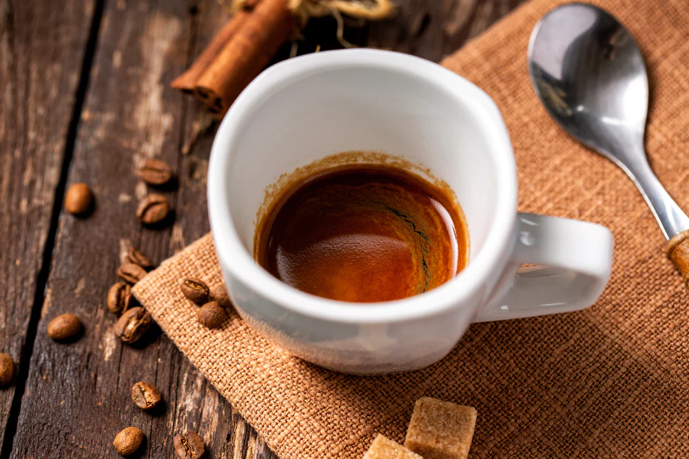

Ristretto, which means restricted in Italian, is half of a single shot of espresso. It differs from a standard espresso not only in the amount of water used for its preparation, but also in flavor, which is less bitter than regular espresso. The color of ristretto is reminiscent of dark chocolate, while the crema is much lighter than in regular espresso.
Meal prep time : 5 minutes
Servings : 1